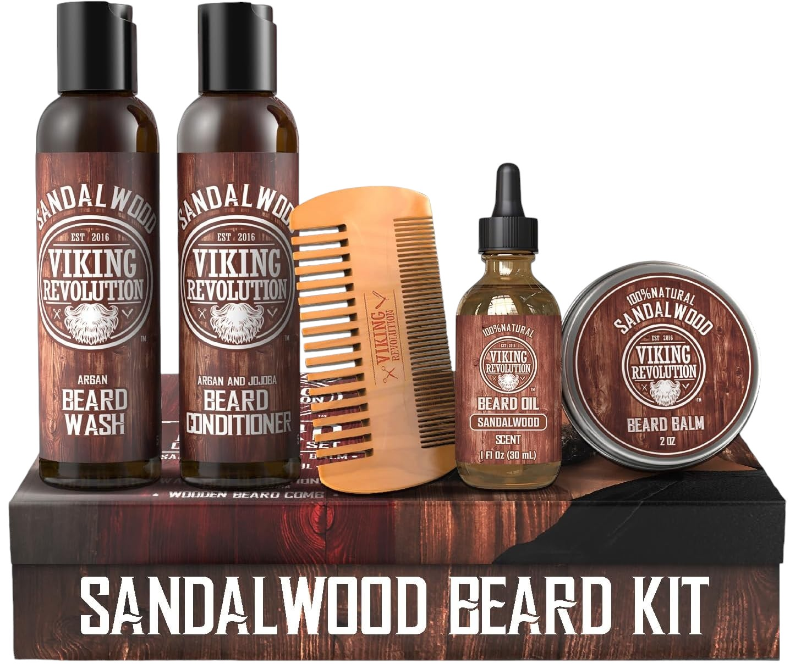
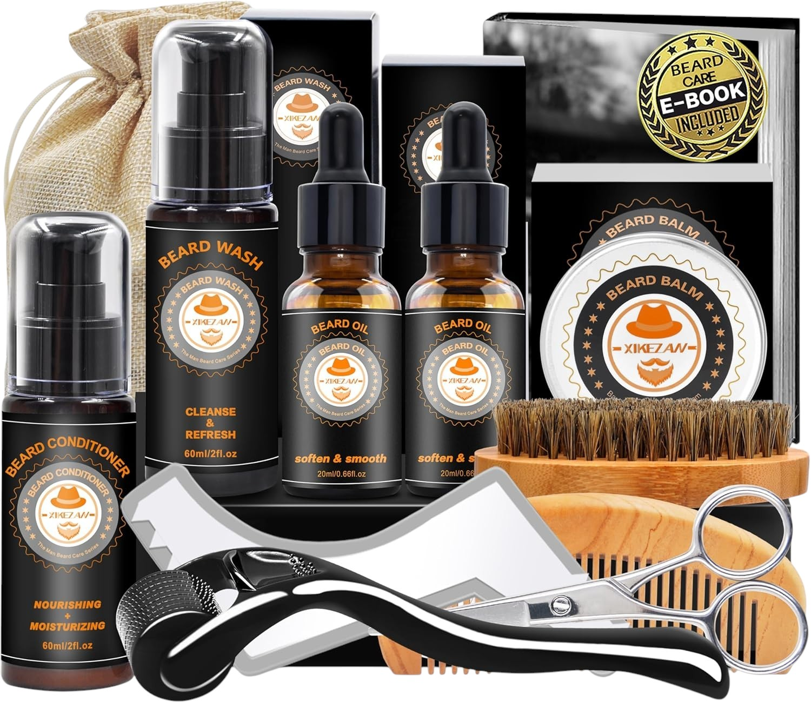
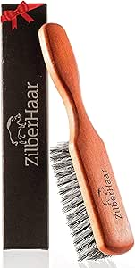
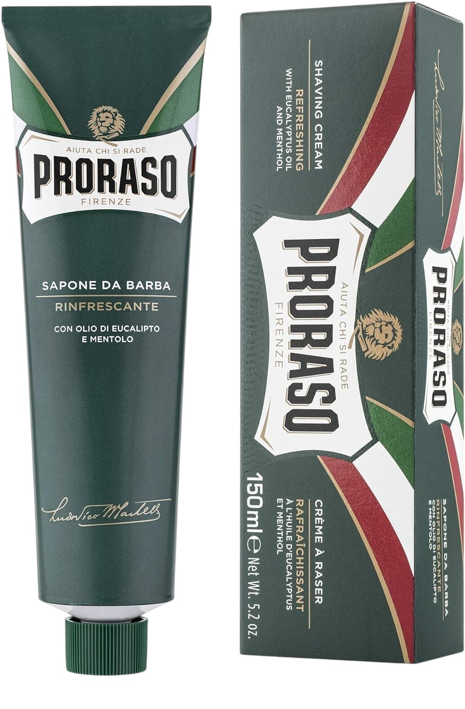
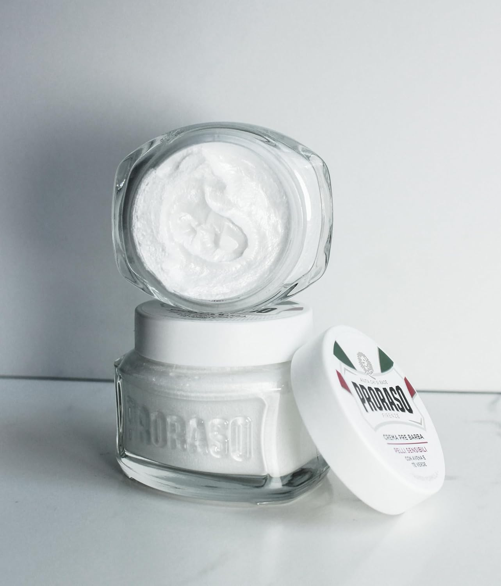

Viking Revolution Sandalwood
Kit equilibrado para barba com foco em manutenção diária simples.
Rotina, conforto e manutenção entre cortes.
Capta uma intenção específica e encaminha o leitor para categorias e produtos com mais contexto.
Os produtos aparecem primeiro para ganhares contexto comercial antes de entrares nos artigos ou nas categorias.

Kit equilibrado para barba com foco em manutenção diária simples.

Kit completo de barba com essenciais para começar a cuidar da barba ou oferecer.

Escova de javali para disciplinar barba e distribuir óleo ou balm.

Creme clássico para barbear húmido com foco em conforto.
Conteúdo com direção clara para ajudar a escolher e clicar melhor.
Menos ruído e mais clareza sobre o que costuma realmente fazer diferença.

Importa perceber onde o processo está a criar fricção desnecessária.
Escolhas para hidratar, disciplinar e simplificar a rotina de barba sem comprar demais.
Produtos para ganhar conforto no barbear e perceber quando creme, espuma, gel ou pré-barba fazem realmente diferença.
Acessórios pequenos, mas com impacto real na forma como distribuis produto, alinhas a barba e manténs o look mais arrumado.